Unilever2024
15,5%
do faturamento investido em marca e marketing, o maior nível em mais de uma década. As vendas subjacentes cresceram 4,2% no ano.
Fonte: Unilever, resultados de 2024 ↗Uberlândia, MG
Filmmaker e Editor de Vídeo
Há três anos edito vídeos ao lado de estrategistas digitais, e foi nesse trabalho que um único Reel editado por mim passou de 11 milhões de visualizações e trouxe mais de 60 mil novos seguidores para um perfil de especialista. No último ano, ampliei minha atuação para a captação e me tornei também filmmaker, gravando centenas de vídeos para lojas, empresas e restaurantes, com equipamento próprio. Hoje uso essa mesma lógica de atenção e retenção para criar vídeos que ajudam empresas a venderem mais, da captação à edição final.
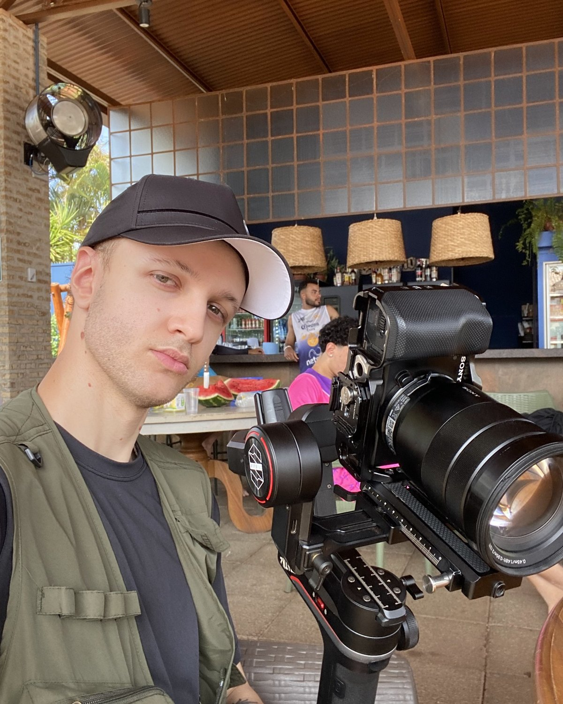
11,3 mi, 114 mil e 8,6 mi vêm de projetos anteriores, em que atuei somente na edição.
Resultados
Conteúdo editado para perfis de especialistas. Dois desses perfis chegaram a 114 mil seguidores em pouco tempo, ambos com lançamento de curso.
Projetos RelevantesEstes são os projetos e resultados mais relevantes em que atuei, sempre somente na edição dos conteúdos, pela EVOX Estúdios. Não são projetos ativos, e hoje não atuo mais neles.
Projeto · Edição
Perfil sobre cólicas, gases e refluxo em bebês. Edição dos Reels em equipe, alinhada à estratégia de conteúdo.
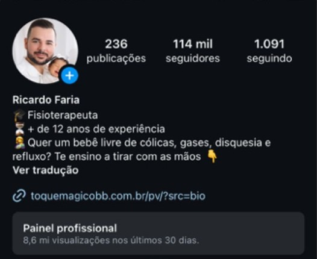
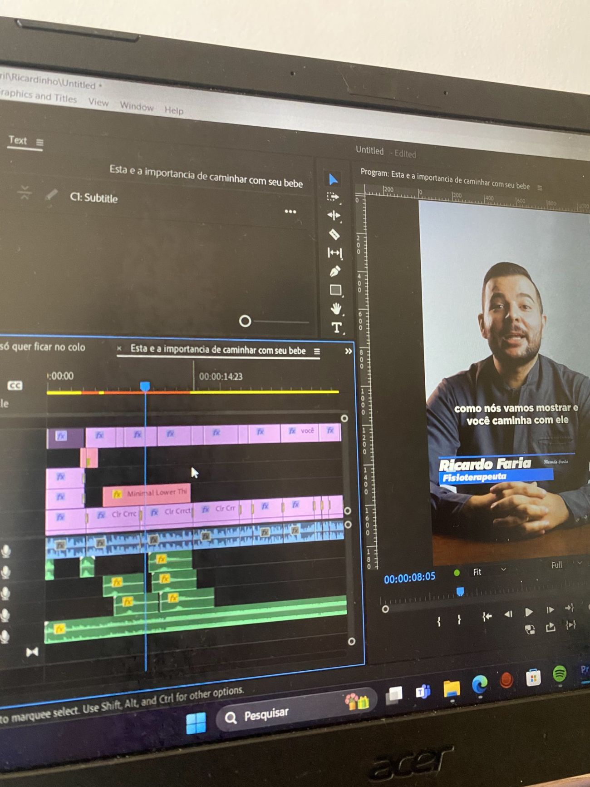
Reel em Destaque · Insights
Primeiros dias
95,5% das interações vieram de pessoas que ainda não seguiam o perfil, e o vídeo foi compartilhado 156 mil vezes.
Alguns dias depois
Um único Reel de 54 segundos trouxe mais de 60 mil novos seguidores para o perfil.
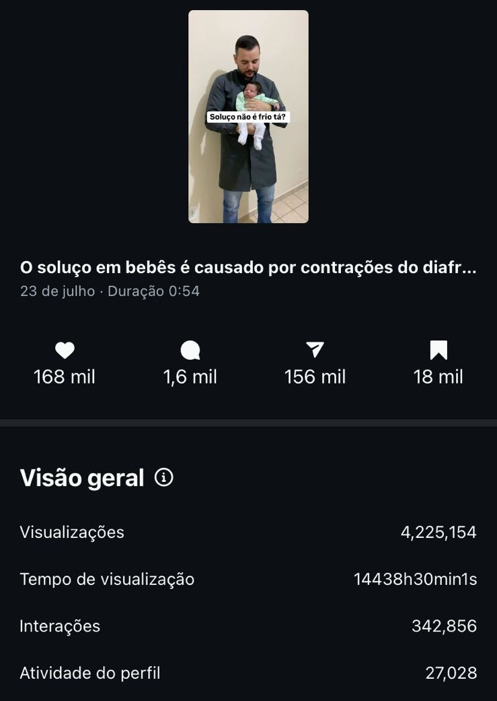
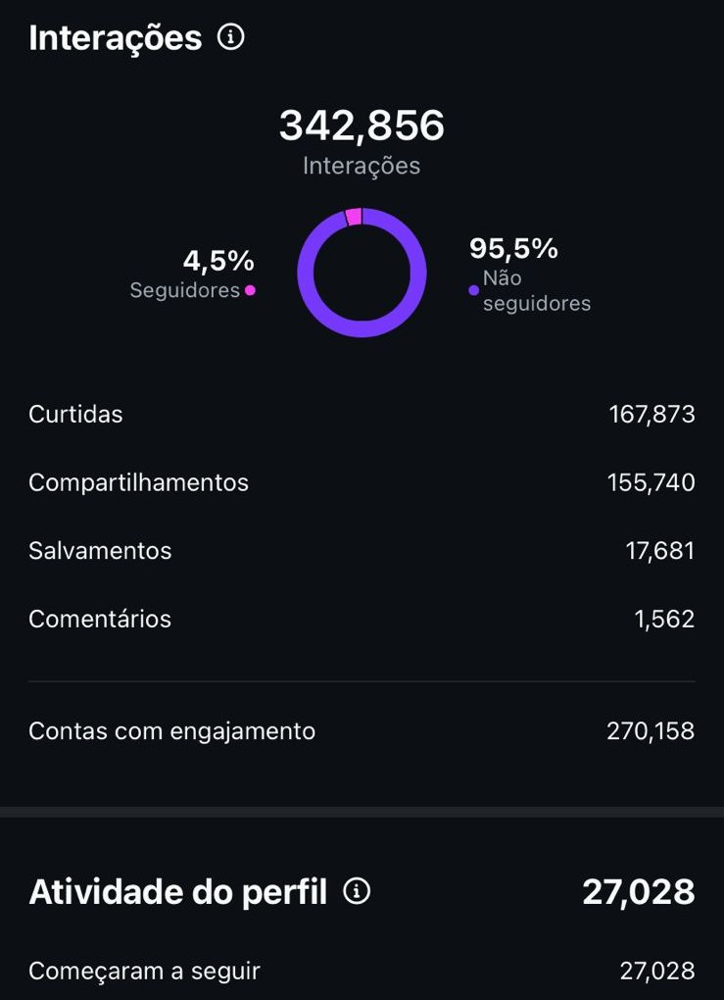
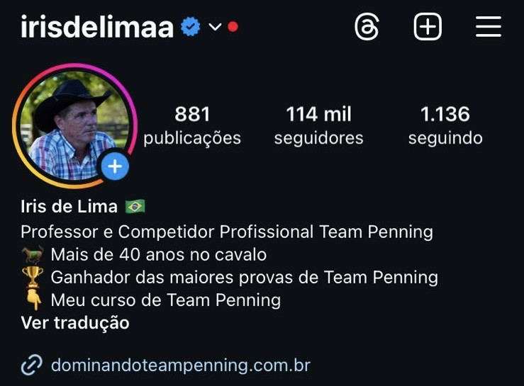
Projeto · Edição
Professor e competidor profissional de Team Penning, com mais de 40 anos no cavalo. Edição de conteúdo no mesmo time, com estratégia e produção constante.
Vídeos
Separados por segmento. Toque na capa para assistir nesta página.
Coberturas completas, com música, fiéis e os momentos mais marcantes de cada celebração.
Produto em close, preparo e salão, em vídeos institucionais, chamadas com preço e delivery.
Sorveteria1 vídeo
Pizzaria1 vídeo
Restaurante Japonês4 vídeos
Campanha de data comemorativa e vitrine de produtos, com apresentadora e chamada para a loja.
A história do profissional e a apresentação do atendimento, com chamada para agendar.
Uma gravação real, com a edição feita junto com o Claude.
Sobre a Edição
Neste vídeo eu apresento este portfólio: como ele foi criado com o Claude, publicado no GitHub e no Cloudflare e pensado para funcionar como uma página de vendas do meu trabalho. A fala divide a tela com a navegação pelo site, e cada trecho ganhou elementos visuais e sonoros que reforçam o que está sendo dito.
Etapas da edição executadas pelo Claude3 de 3
Animações em motion design criadas com o Claude, para anúncios, histórias de marca e conteúdos de posicionamento.
Serviços
Tipos de trabalho já entregues, da gravação no local ao vídeo pronto para publicar.
Reels, TikTok e Shorts editados com foco em retenção, em parceria com estrategistas digitais, para perfis de especialistas e influenciadores.
Vídeos gravados no local, com equipamentos profissionais, garantindo máxima qualidade de som e imagem para a produção. Seja para redes sociais ou pontos físicos, como TV ou painel digital.
Vídeos produzidos de acordo com o objetivo de cada campanha, de peças curtas a institucionais completos, e até criativos para anúncios.
Edição do episódio com identidade sonora e visual do cliente, recorte e reposicionamento de trechos relevantes para hooks iniciais e análise de potenciais pontos virais, que podem se tornar conteúdos para Reels, Shorts do YouTube e TikTok.
Retorno
Uma simulação de 12 meses que compara o faturamento de quem produz conteúdo com constância com o de quem ainda não aparece nas redes. Escolha o segmento e o faturamento atual para ver a projeção do seu negócio.
ProjeçãoDados ilustrativos, baseados em projeções. Os resultados podem ser maiores ou menores de acordo com a realidade atual de cada empresa.
Mesma empresa, dois caminhos: produzir conteúdo todo mês ou continuar fora das redes.
Números públicos de relatórios anuais, balanços e pesquisas de mercado. Diferente da simulação, estes dados são reais.
Passe o mouse para pausarToque para pausar
15,5%
do faturamento investido em marca e marketing, o maior nível em mais de uma década. As vendas subjacentes cresceram 4,2% no ano.
Fonte: Unilever, resultados de 2024 ↗~90%
do tráfego chega de forma direta ou não paga, depois que a empresa cortou anúncios de performance para investir em marca.
Fonte: Marketing Week, com dados do Airbnb ↗US$ 2,2 bi
investidos em vendas e marketing. No mesmo ano, a receita cresceu 38%.
Fonte: Mercado Livre, relatório anual 2024 ↗71%
das vendas vieram do digital: mais de R$ 46 bi de um total de R$ 65 bi.
Fonte: Magazine Luiza, resultados do 4º tri de 2024 ↗80–90%
dos clientes chegaram de forma orgânica, por indicação, com custo de aquisição de cerca de US$ 5 por cliente.
Fonte: Prospecto do IPO, via Finsiders ↗US$ 5,1 bi
em publicidade em um único ano, mesmo sendo uma das marcas mais conhecidas do mundo.
Fonte: Coca-Cola, relatório anual 2024 ↗US$ 1,78 bi
em publicidade. No mesmo ano, a receita chegou a US$ 39 bi, 16% a mais.
Fonte: Netflix, relatório anual 2024 ↗+24%
de investimento em marketing e campanhas, com as vendas digitais da marca crescendo 18% no ano fiscal.
Fonte: Nike, resultados do ano fiscal 2022 ↗40,6%
da verba de mídia das agências no Brasil foi para a internet.
Fonte: Cenp-Meios, via Meio & Mensagem ↗48%
dos pequenos negócios brasileiros já pagaram por anúncios nas redes sociais ou na internet.
Fonte: Sebrae, Pulso dos Pequenos Negócios ↗Investimento e crescimento aparecem no mesmo período, e cada empresa mede o investimento de um jeito, então os valores não são comparáveis entre si. As empresas citadas não têm relação com este portfólio.
Despesas operacionais mensais estimadas para o segmento, com o investimento em conteúdo somado ao final.
O conteúdo representa 5,6% do que a empresa já gasta todo mês para funcionar.
Crescimento projetado no faturamento depois de 12 meses de produção constante.
no faturamento em 12 meses
Em 12 meses, R$ 42 mil investidos se transformam em R$ 132 mil de faturamento a mais.
Bastidores
Gravações de profissionais, produtos e momentos.
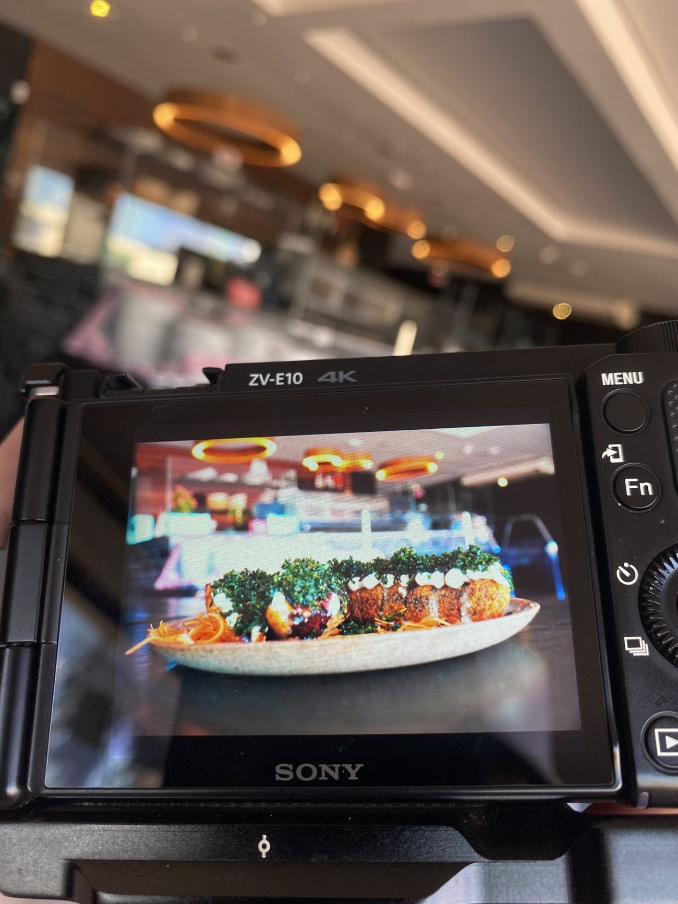
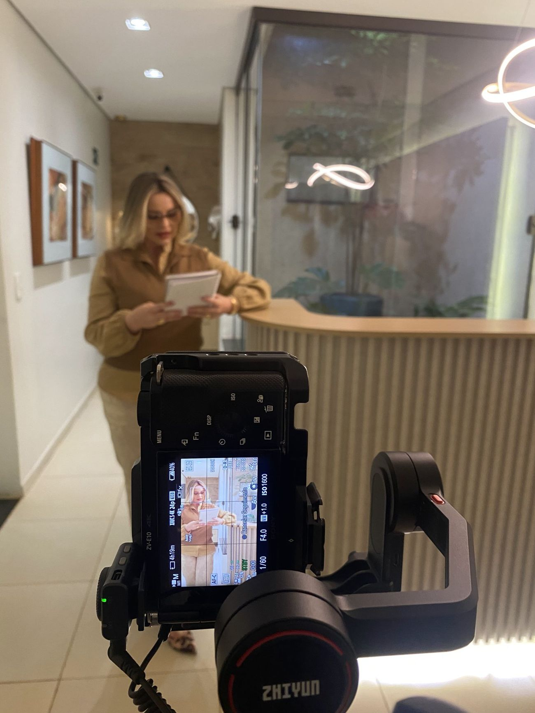
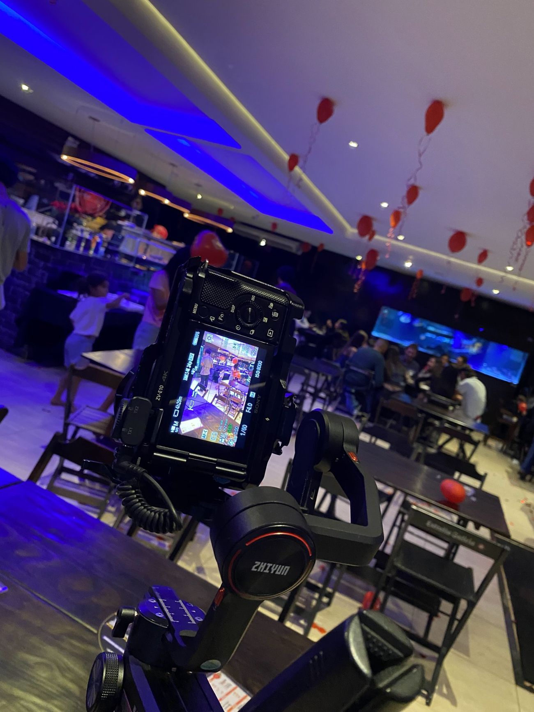
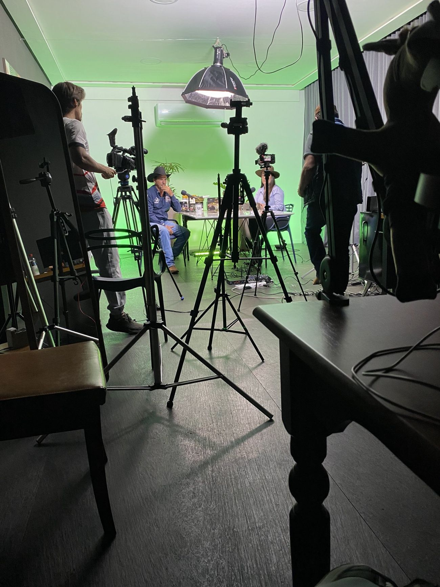
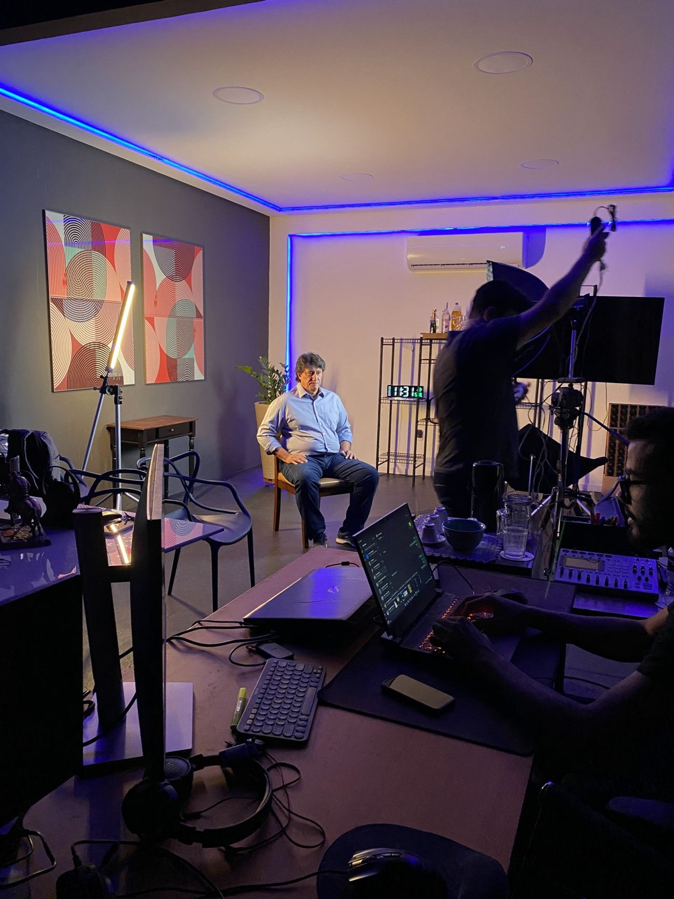
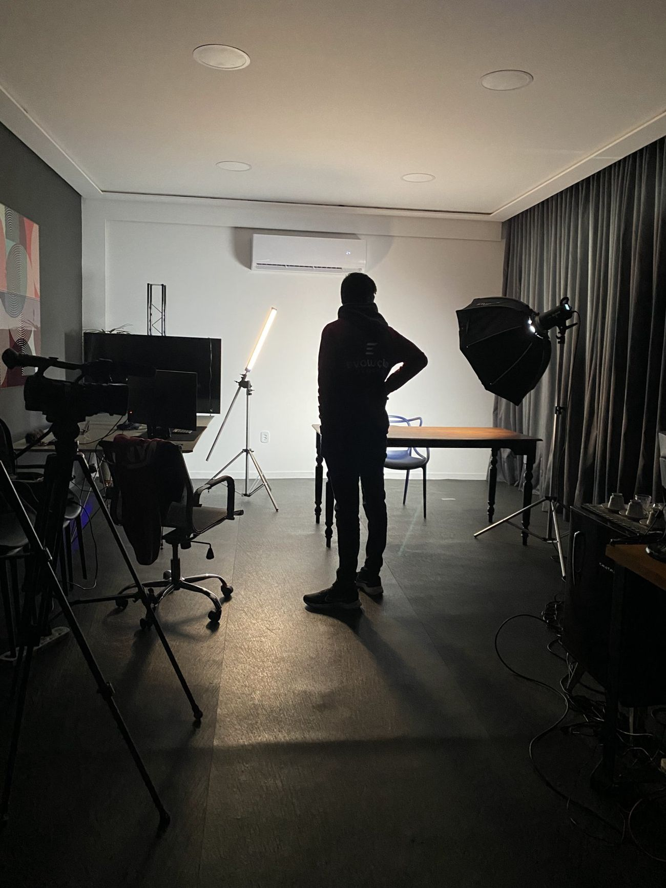
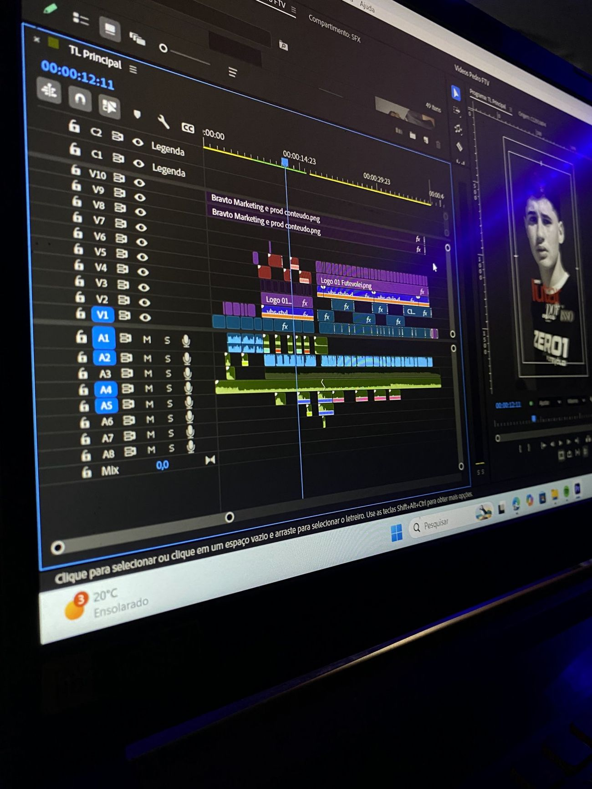
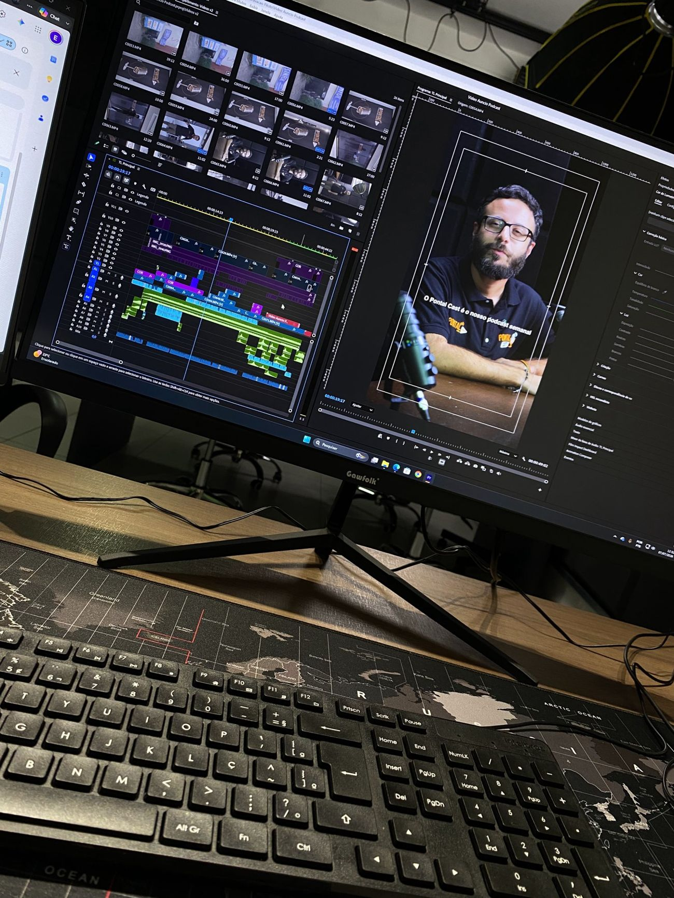
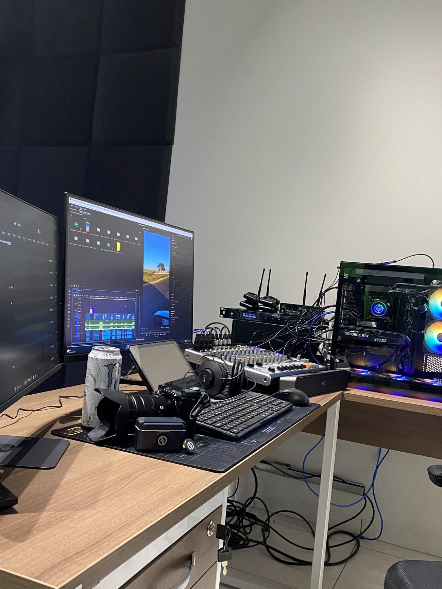
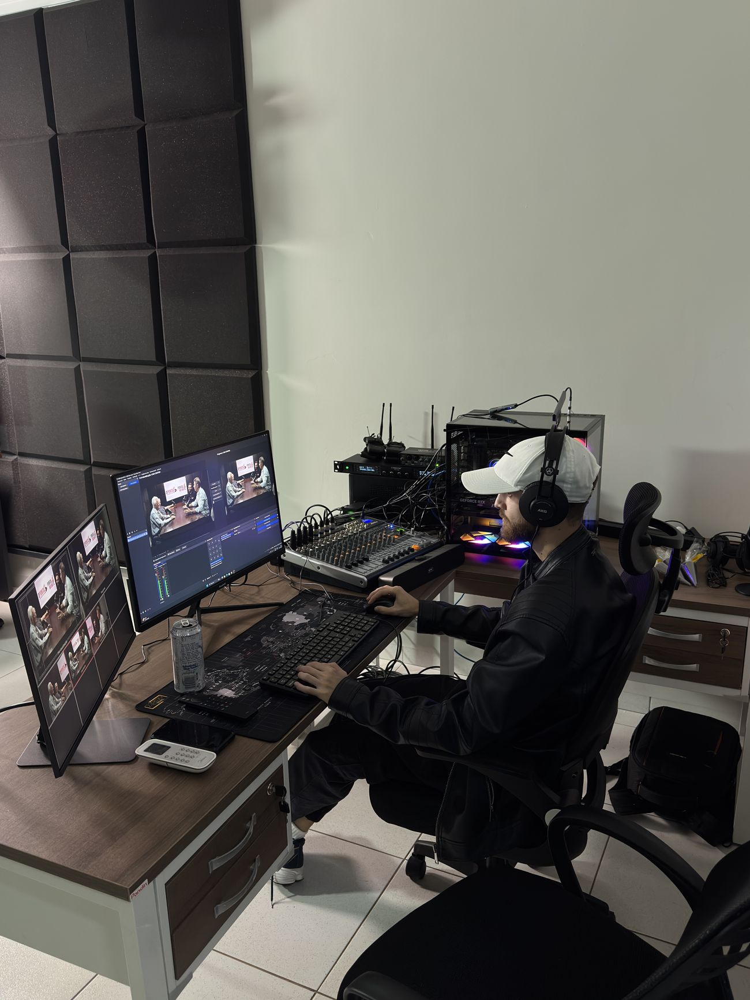
Trajetória
Editor de vídeo há 3 anos. Trabalho com estrategistas digitais na edição de conteúdo para crescimento de perfis de especialistas e influenciadores. Conteúdos editados por mim alcançaram milhões de pessoas e trouxeram milhares de novos seguidores para esses perfis.
Filmmaker há 1 ano. Centenas de vídeos gravados em lojas, empresas e restaurantes, de conteúdo para redes sociais a vídeos de produto para as TVs de comércios.
Podcasts. Edição de episódios para o YouTube, com jingles, aberturas e cortes.
Contato